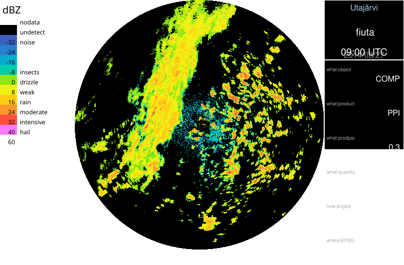

Automatical generation of SVG files
Rack supports presenting generated PNG images collectively using Scalable Vector Graphics (SVG) format.
When executing Rack, all the PNG images that have been written with --outputFile / -o are included automatically in an internal SVG structure.
The structure is always created in the background but written out only if explicitly asked to, with --outputFile
The internal SVG structure is lightweight, so maintaining it in the background is neither time nor memory consuming. In addition, some processing - like alignment of elements - takes places only if an SVG file is actually written out.
Examples of SVG panels
Align images horizontally (default):
rack --outputPrefix $PWD/out/ \
volume.h5 --cProj 3067 --cSize 400 -Q DBZH -c -o gray.png --palette 'default' -o rgb.png \
-o basic_example.svg
Definition DataSelector.cpp:44
SVG panel example: Basic example.
Also legend outputs are included in the resulting SVG panel.
rack --outputPrefix $PWD/out/ \
volume.h5 --cProj 3067 --cSize 400 -Q DBZH -c -o gray.png --palette 'default' -o rgb.png \
--legendOut legend.svg \
-o example_with_a_legend.svg
SVG panel example: Example with a legend.
With several inputs, it is handier to use
--script . Output names must be distinct, which is achieved using variables. If generated products contain different metadata, titles will appear, automatically displaying distinguishing data. For details, see
Defining scripts and
Formatting metadata output using templates .
rack --outputPrefix $PWD/out/ \
--script '--cReset --cProj 3067 --cSize 300 -Q DBZH -c --palette "" -o out-${NOD}.png' \
data/pvol_fi{anj,kor,kuo}.h5 \
-o three_radars_with_automatic_titles.svg
SVG panel example: Three radars, with automatic titles.
Grouping images by timestamp or other metadata Rack supports grouping output images to rows or columns. The groups are identified with
--gGroupTitle arg , using distinguishing variables in the argument, for example
${NOD} ,
${what:date} or
${what:time} .
rack --outputPrefix $PWD/out/ \
--gGroupTitle 'Grouping by time: ${what:time|%H:%M} UTC' \
--script '--cReset --cProj 3067 --cSize 300 -Q DBZH -c --palette "" -o out-${what:date}T${what:time}-${NOD}.png' \
data-kiira/201708121?00*.h5 \
-o time_series.svg
SVG panel example: Time series.
Group layout can be set with
--gLayout that sets orientation
HORZ (rows) or
VERT (column). Also direction can be changed.
--gLayout <orientation>,<direction> (section: graphics)
Set main panel alignment
- orientation (HORZ) [HORZ|VERT]
- direction (INCR) [INCR|DECR]
See also: gAlign,gGroupId,gGroupTitle
Example:
rack --outputPrefix $PWD/out/ \
--script '--cReset --cProj 3067 --cSize 300 -Q DBZH -c --palette "" -o out-${what:date}T${what:time}-${NOD}.png' \
--gLayout VERT,DECR --gGroupTitle 'Grouping by time: ${what:time|%H:%M} UTC' data-kiira/201708121?00*.h5 -o time_series2.svg
SVG panel example: Time series2.
Grouping without displaying titles can be done with setting a criterion with
--gGroupId t followed by
--gGroupTitle . For example, using plain (unformatted) timestamp as follows:
rack --outputPrefix $PWD/out/ \
--gGroupId 'Invisible grouping criterion-${what:date}${what:time}' --gGroupTitle '' \
--script '--cReset --cProj 3067 --cSize 300 -Q DBZH -c --palette "" -o out-${what:date}T${what:time}-${NOD}.png' \
data-kiira/201708121?00_radar.polar.fi{ika,kor,van}.h5 \
-o without_group_titles.svg
SVG panel example: Without group titles.
Similar example using radar site code for grouping:
rack --outputPrefix $PWD/out/ \
--gGroupTitle 'Grouping using radar name: ${PLC} (${NOD})' \
--script '--cReset --cProj 3067 --cSize 300 -Q DBZH -c --palette "" -o out-${what:date}T${what:time}-${NOD}.png' \
data-kiira/20170812*.h5 \
-o grouping_by_site_codes.svg
SVG panel example: Grouping by site codes.
The main title can be set explicitly with
--gTitle command . The default value,
AUTO , displays main title as in the examples above.
rack --outputPrefix $PWD/out/ \
--gTitle 'My Main Title for ${what:date|%A, %d %B %Y}' --gGroupTitle 'Radar ${PLC}' \
--script '--cReset --cProj 3067 --cSize 300 -Q DBZH -c --palette "" -o out-${what:date}T${what:time}-${NOD}.png' \
data-kiira/201708121?00_*{ika,kor,van}.h5 \
-o user-defined_title.svg
SVG panel example: User-defined title.
Main title can be removed with empty arg:
rack --outputPrefix $PWD/out/ \
--gTitle '' --gGroupTitle '${what:time|%H:%M} ' \
--script '--cReset --cSize 300 --cProj 3067 -Q DBZH -c --palette "" -o out-${what:date}T${what:time}-${NOD}.png' \
data-kiira/201708121?00_radar.polar.fi{kor,ika}.h5 \
-o group_titles_only.svg
SVG panel example: Group titles only.
Changing style of graphic panels A further example, usage of styles
rack --outputPrefix $PWD/out/ \
--gLayout VERT \
--gStyle .BORDER='stroke:black;stroke-width:1px' \
--gTitle 'Larger font here...' --gGroupTitle '...but smaller here, with still readable timestamp ${what:date|%A, %d %B %Y} at ${what:time|%H:%M} UTC' --gTitleHeights '40,20,15' \
--script '--cReset --cSize 300 --cProj 3067 -Q DBZH -c --palette "" -o out-${what:date}T${what:time}-${NOD}.png' \
data-kiira/201708121?00_radar.polar.fi{ika,kor,van}.h5 \
-o user-defined_title_height.svg
SVG panel example: User-defined title height.
A further example, usage of styles
rack --outputPrefix $PWD/out/ \
--gGroupId '${what:time}' \
--gStyle .IMAGE_BORDER='stroke:black;stroke-width:1' --gStyle rect.MAIN_TITLE='fill:forestgreen' --gStyle rect.GROUP_TITLE='fill:lightgreen' \
--gStyle text.MAIN='font-family:Times' --gStyle .LOCATION='fill:brown' \
--script '--cReset --cSize 300 --cProj 3067 -Q DBZH -c --palette "" -o out-${what:date}T${what:time}-${NOD}.png' \
data-kiira/201708121?00_radar.polar.fi{ika,kor,van}.h5 \
-o multiple_styles.svg
SVG panel example: Multiple styles.
Metadata panel. (Experimental, variants under development.)
rack --outputPrefix $PWD/out/ \
--gTitleHeights '30,25,15' --gTitle '' --gGroupTitle '' \
volume.h5 \
--cProj 3067 --cSize 500 -Q DBZH -c \
--palette 'default' --legendOut legend.svg -o rbg.png \
--gPanel TECH --gStyle text.IMAGE=opacity:0 \
-o metadata_panel.svg

SVG panel example: Metadata panel.
maps. External images can be linked with
--gLinkImage. For example, maps can be included, aligning the following radar image on top of it with
--gAlign HORZ_FILL,VERT_FILL .
rack --outputPrefix $PWD/out/ \
--inputPrefix $PWD/ \
--gGroupTitle '${NOD} – ${PLC}' \
--script '--cReset --cProj 3067 --cSize 300 -Q DBZH -c --gLinkImage maps/map-radar:${NOD}-${where:EPSG}-${where:xsize}x${where:ysize}.png --imageTransp 0.0:0.1,0,1 --palette default --gAlign 'HORZ_FILL:VERT_FILL' -o out-${what:date}T${what:time}-${NOD}.png' data-kiira/201708121600_radar.polar.fi{kor,ika,van}.h5 -o adding_background_maps.svg
SVG panel example: Adding background maps.
Grid, sector, labels.
rack --outputPrefix $PWD/out/ \
--inputPrefix $PWD/ \
--gGroupTitle '${NOD}' \
--cProj 5120 --cBBox 20,62,32,66.5 --cSize 600 \
volume.h5 \
-Q DBZH -c --palette default -o rgb.png \
--gRadarGrid 50000:1,15:180:540 \
--gRadarSector '245:300,50000:110000' --gRadarMarker '0.1,1' --gStyle .CmdRadarMarker_circle='stroke:cyan;stroke-width:15px' --gRadarLabel '${PLC}\
n${NOD}' \
-o grid_and_sector.svg

SVG panel example: grid and sector.
Alignment of the elements is done horizontally or vertically. By default, images are positioned horizontally, from left to right. This can be changed with --gLayout , selecting orientation as HORZ or VERT and coordinate direction as increasing (INCR ) or decreasing (DECR ).
The resulting SVG file can be converted to various other image formats using ImageMagick's convert program, for example. A good alternative is inkscape .
Relative or absolute image file paths?
In SVG files, IMAGE elements may use either relative or absolute file paths. By default, Rack uses absolute paths in IMAGE elements. Should relative paths be used, simply use them on commandline, or use --outputPrefix $PWD/ together with --outputConf svg:absolutePaths=false .
Some considerations:
- If an SVG file is to be placed on an HTML page, file references of IMAGE elements must be relative – HTTP servers typically avoid revealing any system-side paths, hence do not support them in openly adressing files.
- ImageMagick's
convert and display programs seem to require absolute paths in filenames.
Inkscape program supports both
With Rack , SVG files can also be created using templates, see Formatting metadata output using templates .
 1.9.8
1.9.8